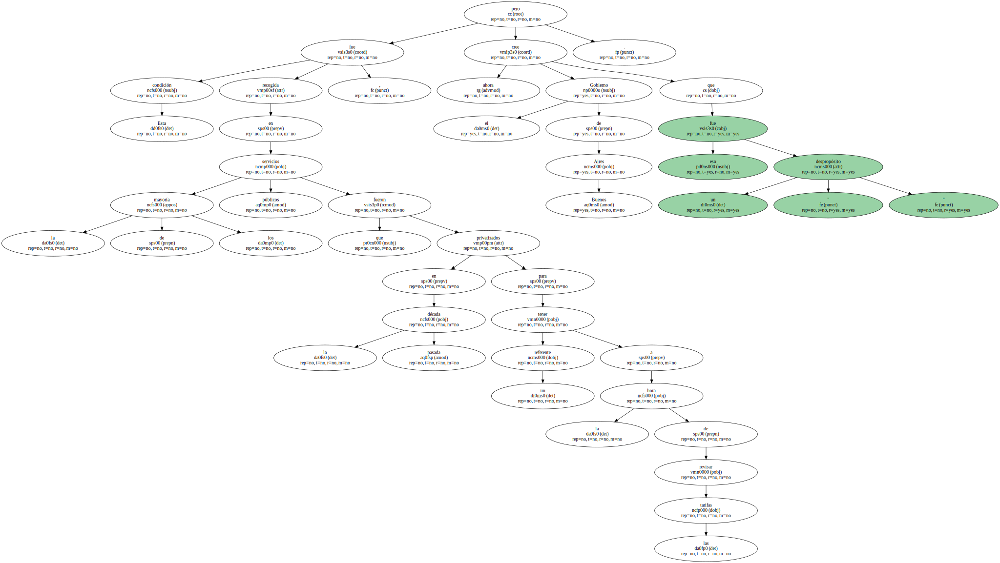
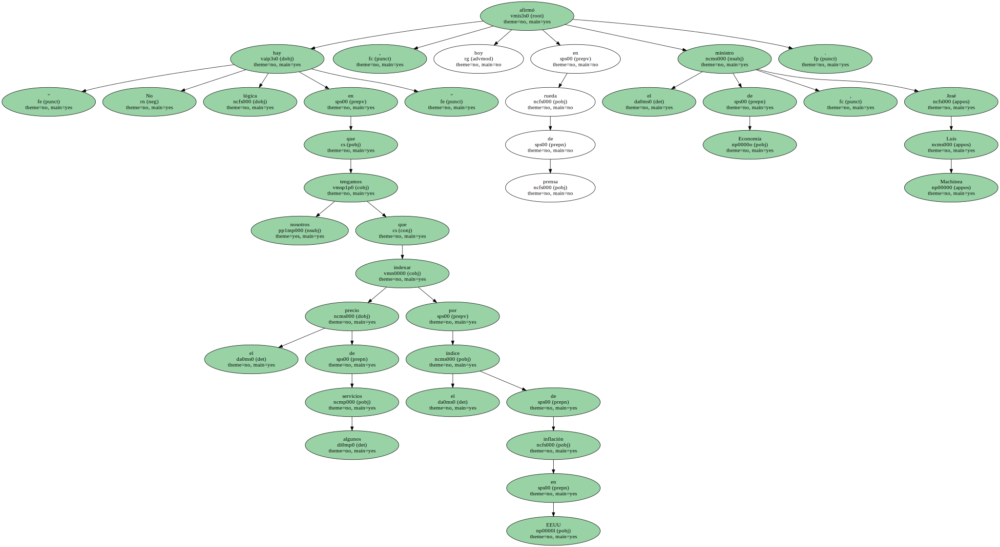
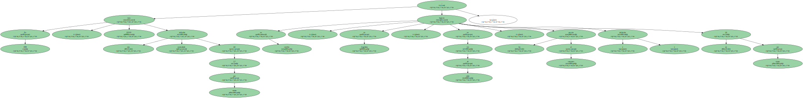
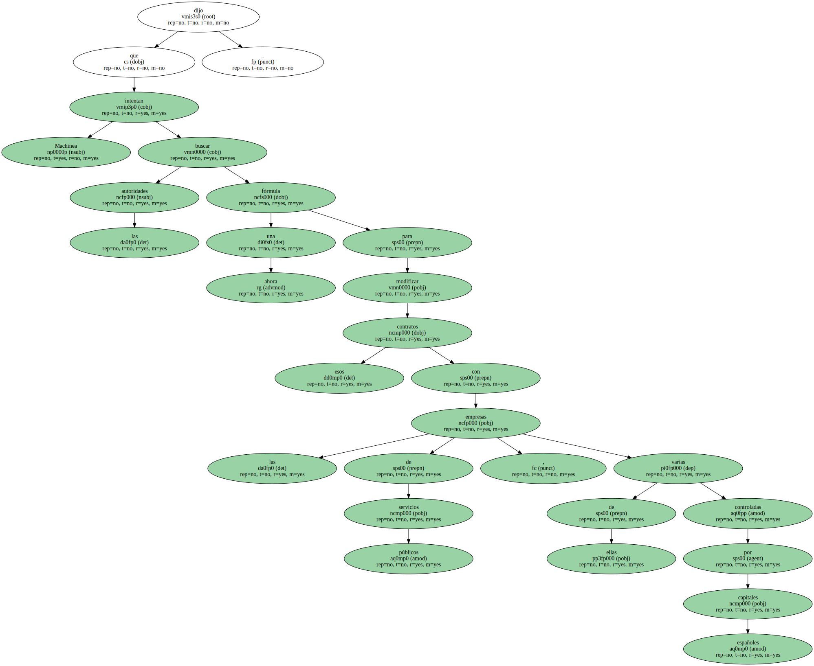
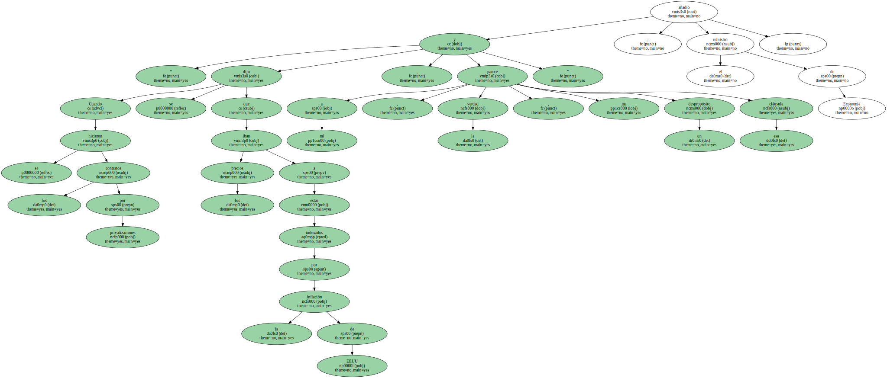
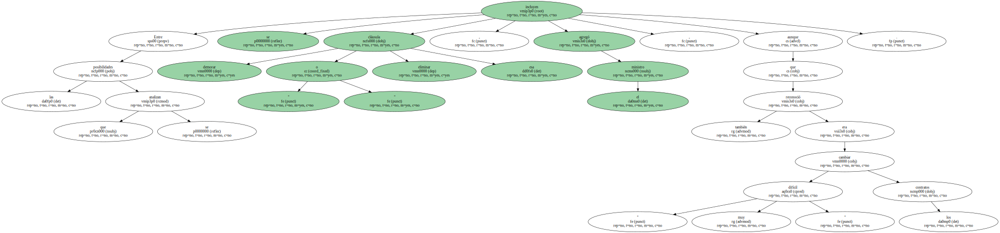

Las autoridades económicas de Argentina anunciaron hoy su intención de revisar los contratos de servicios públicos privatizados para evitar que los precios suban de acuerdo con la inflación de los Estados Unidos.

Esta condición fue recogida en la mayoría de los servicios públicos que fueron privatizados en la década pasada para tener un referente a la hora de revisar las tarifas , pero ahora el Gobierno de Buenos Aires cree que eso fue un " despropósito ".
" No hay lógica en que nosotros tengamos que indexar el precio de algunos servicios por el índice de inflación en EEUU " , afirmó hoy en rueda de prensa el ministro de Economía , José Luis Machinea.
En 1999 , EEUU tuvo una inflación acumulada del 2,7 por ciento ; en cambio , en Argentina , en vez de subir , los precios al consumo bajaron ( deflación ) un 1,8 por ciento.
Machinea dijo que las autoridades intentan buscar ahora una fórmula para modificar esos contratos con las empresas de servicios públicos , varias de ellas controladas por capitales españoles.
" Cuando se hicieron los contratos por privatizaciones se dijo que los precios iban a estar indexados por la inflación de EEUU , y a mí , la verdad , me parece un despropósito esa cláusula " , añadió el ministro de Economía.
Entre las posibilidades que se analizan se incluyen " demorar o eliminar " esa cláusula , agregó el ministro , aunque también reconoció que era " muy difícil " cambiar los contratos.
